教你炒股票31：资金管理的最稳固基础
(2007-02-15 15:16:12)
对于小资金来说，资金管理不算一个特别大的问题，但随着赢利的积累，资金越来越大，资金管理就成了最重要的事情。一般来说，只要有好的技术，从万元级到千万元级，都不是什么难事情。但从千万以后，就很少人能稳定地增长上去了。所有的短线客，在资金发展到一定后，就进入滞涨状态，一旦进入大级别的调整，然后就打回原形，这种事情见得太多了。因此，在最开始就养成好的资金管理习惯，是极为重要的。投资，是一生的游戏，被打回原形是很可悲的事情，好的资金管理，才能保证资金积累的长期稳定，在某种程度上，这比任何的技术都重要，而且是越来越重要。对于大资金来说，最后比拼的，其实就是资金管理的水平。
资金，必须长期无压力，这是最重要的。有人借钱投资，然后赢利后还继续加码，结果都是一场游戏一场梦。96年，本ID认识一东北朋友，大概是不到10万元开始，当时，可以高比例透资，1比2、3很普通，1比10也经常见，当时的疯狂，不是现在的人能想象的。在96年的牛市中，他很快就从不到10万变成2千多万，当时，透资的比例也降下来，大概就1比1多点，如果当时把所有透资还了，就没有后来的悲剧了。对于他来说，96年最后三周一定是最悲惨的，股票从12元在三周内急跌到6元以下，有人可能要问，那他为什么不先平仓？老人都知道，那次下跌是突然转折，瀑布一样下来的，如果没有走，根本没有走的机会，最后能走的时候，由于快触及平仓点，他的仓位在6元多往下一直平下去，根本没有拒绝的可能，证券部要收钱，最后，还了透资，只剩下不到20万，真是一场游戏一场梦，又回到原点。但这还不是最戏剧性的，最悲惨的是，这股票从他平完仓的当天开始到97年5月，不到5个月的时间，从6元不到一直涨到30元以上，成了最大的黑马，这股票是深圳本地股，后来从30多元反复下跌，05年到了3元以下，目前价位在他被开始平仓的位置，6元多点。
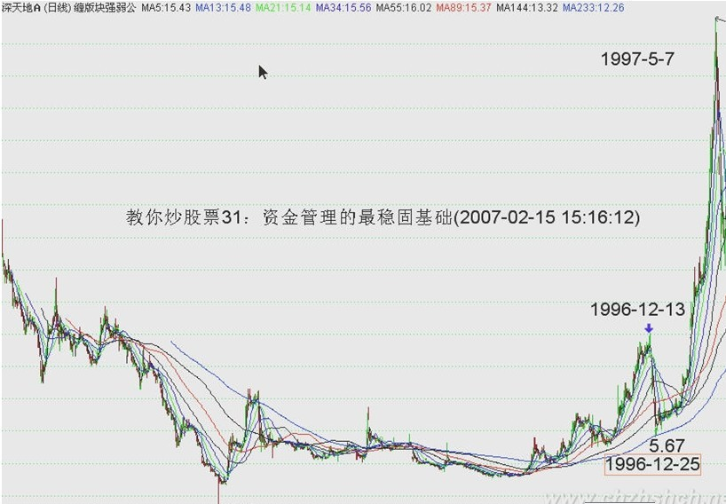
一个无压力的资金，是投资的第一要点，虽然前面反复说过，但说完上面的例子，还是要再次强调。另外一个重要的，就是自己的资金，一定不能交给别人管理，自己的盘子，一定要自己负责，不能把自己的命运交给别人。又是一个故事，时间要提早4、5年，92年的事情了。这朋友，92年已经有几千万的资金，在当时也算可以了。结果，因为家里有事处理，把盘子交给一个朋友管理，那人还是后来特别出名的人，说出来，市场里的老人都知道，当时大盘从1400多点回跌，已经跌了很多，以为到底部了，结果这家伙自作主张透资抄底，大盘却一直下跌，等这朋友过了两、三周回来，一切早已灰飞湮灭。那次大盘一直跌破400点才到底部，半年内一共下跌了1000多点，后来从400点以下不到4个月又创出1558点的历史高位，市场就是这么残酷，把命运交给别人，就是这样了。
不能把自己放置在一个危险的境地，所谓背水一战、置之死地而后生，都不是资本市场应该采取的态度。这样的态度，可能一时成功，但最终必然失败。技术分析的最重要意义在于，让你知道市场究竟在干什么，市场在什么位置该干什么，让你知道，一个建立的仓位，如何持有，如何把一个小级别的持有逐步转化为大级别的持有，又如何退出，这一切，最终都是为资金管理服务的，投资最终的目的不是股票本身，而是资金，没收回资金，一切都没意义。股票都是废纸，对资金的任何疏忽，都会造成不可挽回的损失。任何人，必须明确的是，多大的资金，在市场中都不算什么，而且，资金是按比例损失的，一万亿和一万元，按比例损失，变成0的速度是一样的。无论多大的资金，要被消灭，可以在举手之间，因此，永远保持最大的警觉，这是资金管理最大的、最重要的一点，没有这一点，一切管理都是无用的。
一个最简单又最有效的管理，就是当成本为0以前，要把成本变为0；当成本变成0以后，就要挣股票，直到股票见到历史性大顶，也就是至少出现月线以上的卖点。一些最坏的习惯，就是股票不断上涨，就不断加仓，这样一定会出问题。买股票，宁愿不断跌不断买，也绝对不往上加码。
投入资金买一只股票，必须有仔细、充分的准备，这如同军队打仗，不准备好怎么可能赢？在基本面、技术面等方面都研究好了，介入就要坚决，一次性买入。如果你连一次性买入的信心都没有，证明你根本没准备好，那就一股都不要买。买入以后，如果你技术过关，马上上涨是很正常的，但如果没这水平，下跌了，除非证明你买入的理由没有了，技术上出现严重的形态，否则都不能抛一股，而且可以用部分机动的资金去弄点短差（注意，针对每只买入的股票，都要留部分机动的资金，例如1/10），让成本降下来，但每次短差，一定不能增加股票的数量，这样，成本才可能真的降下来，有些人喜欢越买越多，其实不是什么好习惯。这股票该买多少，该占总体资金多少，一开始就应该研究好，投入以后就不能再增加。
股票开始上涨后，一定要找机会把股票的成本变成0，除了途中利用小级别不断弄短差外，还要在股票达到1倍升幅附近找一个大级别的卖点出掉部分，把成本降为0。这样，原来投入的资金就全部收回来了。有人可能要说，如果那股票以后还要上涨10倍呢？这没问题，当股票成本为0以后，就要开始挣股票。也就是利用每一个短差，上面抛了以后，都全部回补，这样股票就越来越多，而成本还是0。这样，这股票就算再上涨100倍，越涨你的股票越来越多，而成本永远为0，这是最可怕的吸血，庄家、基金无论如何洗盘，都使得你的股票越来越多，而你的成本却是0，然后，等待一个超大级别的卖点，一次性把他砸死，把那庄家、基金给毁了。想想，成本为0的股票，在历史大顶上砸起来是最爽的。
这就是资金管理中针对每只股票的最大原则，按照这原则，你不仅可以得到最安全的操作，而且可以赢得最大的利润。特别挣股票的阶段，一般一个股票，盘整的时间都占一半以上，如果一个股票在上涨后出现大型盘整，只要超大级别卖点没出现，这个盘整会让你的股票不仅把抛掉的全挣回来，而且比底部的数量还要多，甚至多很多。一旦股票再次启动，你就拥有比底部还多的但成本为0的股票，这才是最大的黑马，也是最大的利器。一个合理的持仓结构，就是拥有的0成本股票越来越多，一直游戏到大级别上涨结束以后，例如这轮大牛市，直到牛市结束前，才把所有股票全部清仓。而资金，就可以不断增加参与的股票种类，把这程序不断下去，这样，操作资金不会增加，特别对大资金，不会经常被搞到去当庄家或钱太多买了没人敢进来，这样就不会增加操作的难度，但股票种类越来越多，但成本都是0。这样，才会有一个最稳固的资金管理基础。
-----------------------------------------------------------------------------------
注：资金管理的方法
成本为0前用机动资金做短差，买入多少就是卖出多少不增加仓位。股票翻倍后出掉部分仓位成本为0后，卖出多少资金就买入多少资金做短差赚股票，仓位是增加的。一直到大级别上涨结束全部卖出。
每日解盘（2007-02-15 15:18:31 )
缠中说禅：2007-02-15 15:18:31
一言既出、驷马难追。既然承诺大家春节前一定让联通上5元，大盘上3000，就无论如何都要办到。当然，这不是本ID一个人能办到的，但在北京，又有什么不能办到的？中国的中心是北京，北京人最讨厌汉奸，汉奸既然在3000点之前捣乱，就要让红旗放上3000点过年，中国的世纪，哪里有汉奸说话的地方？
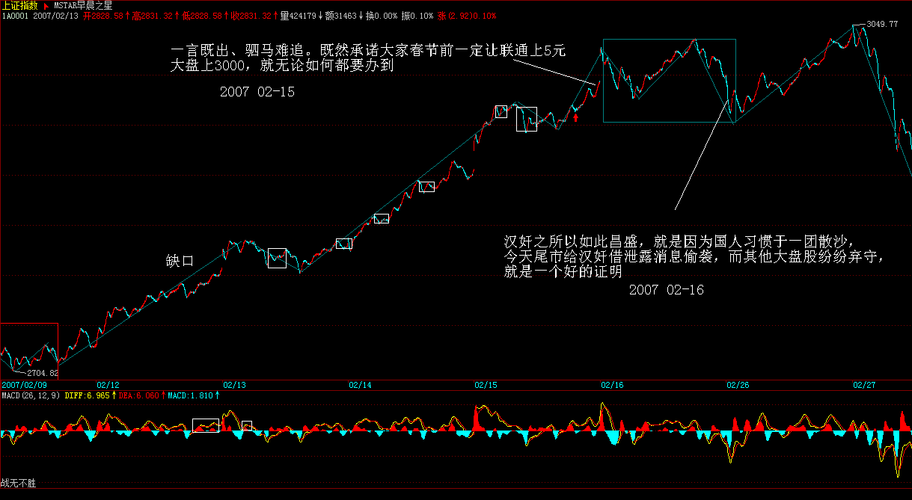
血战，快意恩仇，就这么简单了。该看到的大家都看到的，不能看到的也没必要说了。对于本ID曾说过的10多只股票，除了一些前期涨幅过大的，都创出新高了，当然，有些涨得快点，有些慢的，但中线肯定都没问题。
不过，本ID在这里公布说阻击的目标，确实让本ID操作上增加很大难度，这里汉奸的眼线肯定不少了，现在本ID说的股票，本ID不动好象就没人动了，这样不好，本ID又不是庄家，这样搞下去没意思了。所以，里面的庄家也别太偷懒，虽然你们肯定是本ID的后辈，但你们的年龄估计都比本ID大，尊敬长辈也没有这样的，自己看着办吧。
以市场老人的口吻教训一些这些懒人，市场是需要口碑的，吃点小亏，立个金字牌子，有什么不好的。举一个本ID在N年前干过的最小的事情，把一只股票从14元，两周多点阻击上25元全出掉，时间也是春节前后，一分钱没花，靠的是什么？自己去想想吧。
明天，汉奸还有可能发难，所以，大家还需要努力。
每日解盘(2007-02-16 15:21:37)
放假公告(2007-02-16
15:21:37)
过年好
汉奸之所以如此昌盛，就是因为国人习惯于一团散沙，今天尾市给汉奸借泄露消息偷袭，而其他大盘股纷纷弃守，就是一个好的证明，但联通已经干了他该干的事情，没有丢人。除了本周的联通，本ID以前说过的14只股票，除了2只，全部今天都见到过本轮行情的新高，而那没见新高的两只，都和一个有着汉奸名字的基金有关，本ID不待见他们。前面说过，就算突破3000点，震荡还是必须的，这场多空的绞杀战，依然要继续。
放假了，少谈股票，多谈面首。先和各位拜年了，在炮竹声中，听听自己在哪里？
每日解盘(2007-02-26 15:50:13)
汉奸，有本事拿几十亿股联通把本ID砸死！(2007-02-26 15:50:13)
当本ID8号说要阻击联通，让联通春节前上5元，让大盘上3000点，估计汉奸们都在窃喜，盘算着这次怎么搞死本ID。结果，最后一天，看联通无法得手，尾市只好借泄露的消息偷袭，让大盘收在2998，以为这样就能让本ID丢脸。这种小肚鸡肠，也只有汉奸能干出来了。这种无聊的偷袭能改变什么？靠收买几个官员、知道点垃圾消息就想左右市场？脑子水太多了吧！
中国的世纪，中国人的地盘难道还不让中国人说了算？本ID这次如此高调，并不是本ID有裸奔的爱好，而是这次的战役，就像百团大战，必须打，砸了锅也要打，否则像罗杰斯这种垃圾以及汉奸就会以为这天下还是他们的！而这也像百团大战一样，要打得全世界的人都知道，要告诉那些没有骨头的国人，鬼佬、汉奸连面首都算不上！说句闲话，像本ID这里的点击竟然还没有孔男人那里的三份之一多，这大概也是中国汉奸多的一个指标之一。 那些面首以及面首都不如的，就不说他们了。大盘震荡的反复是不可避免的，而且站在纯技术上，就算站稳3000点上攻，也有极大可能进入日线的背驰段。但个股，特别是有题材的二、三线股票，将越来越摆脱指数的影响。联通是让大家观摩的，散户真没必要买，原来说过的14只股票，究竟整体走得怎样，大家也有目共睹了。不妨再列一次出来：
12月中旬说的：000999、000777、000600、000778、600777。元旦后说的：000416、000915、000099。1月中下旬说的：600343、000998、600649、600578、600432
2月上旬说的：000938
其实散户挣钱真的很简单，就像这14只股票，基本的节奏都不大一样，利用技术，把涨幅大的换成涨幅小的，这样的利用率就高了。就像，一开始基本都有的000999，1月25日翻倍进入调整，而000416在1月26日见到洗盘回试的低点，为什么这么巧，就没必要追究了，只是到今天，也是刚好一个月，基本也翻倍了，这股票本ID可有特别提示的，当时本ID叫他“今天过年不收礼”，后面一句是什么，应该没人不知道吧？而他过年前后的表现，大家也看到了吧。如果你的节奏弄好，两个月翻两番并不是什么难事。
有了联通后，大概本ID也不能再说什么具体的股票了，否则肯定要给抢乱套了。对今年的板块，去年底的时候已经明确说过，药是去年的酒，钢铁是去年的有色，有人当时还不相信，现在不知道见到没有？二、三线的小板块，一月下旬明确说了，农业、环保、军工、有色、公用，这些还会继续表现的。农业、环保，是中国政策必须倾斜的，最近这方面的政策越来越明确了。另外，有些特别的小板块，像VC、深沪本地低价股，特别是深圳的，要充分注意，历史上，最大的黑马，特别在炒垃圾股时的最大黑马，经常出现在这里。
学了那么多，在这么小的范围内找一个合适的股票，各位应该可以胜任了。本ID如果还明确说一只出来，就害大家了，把本ID当股评看了，这样也太对不住本ID的课程了。
每日解盘(2007-02-27 15:31:20 )
缠中说禅：2007-02-27 15:31:20
大概当汉奸想砸盘时，才发现本ID砸起盘来比他们都凶，这也是本ID反复强调散户
千万别买的原因。本ID承诺春节办到的事情，可从来没承诺，一定要永远守住什么。大盘调整的必然性，在周线中枢必须有第三段(注：实为日中枢），
这叫走势必完美了。所以震荡是不可避免的，就算大盘站稳3000，也就是进入日线的背弛段(注：日线图MACD归0后的背驰段）。今天一个短线背弛引发的单边下跌，没什么可奇怪的，都是计划之中。 (注:2007年2月6日有日中枢的划分，后面走势走出来后，中枢后移，保留前趋势。)
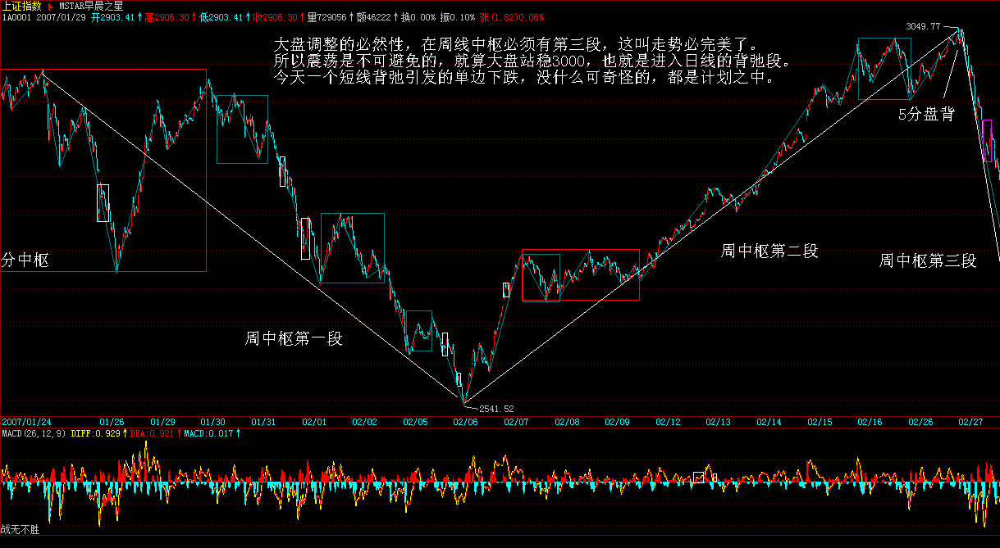
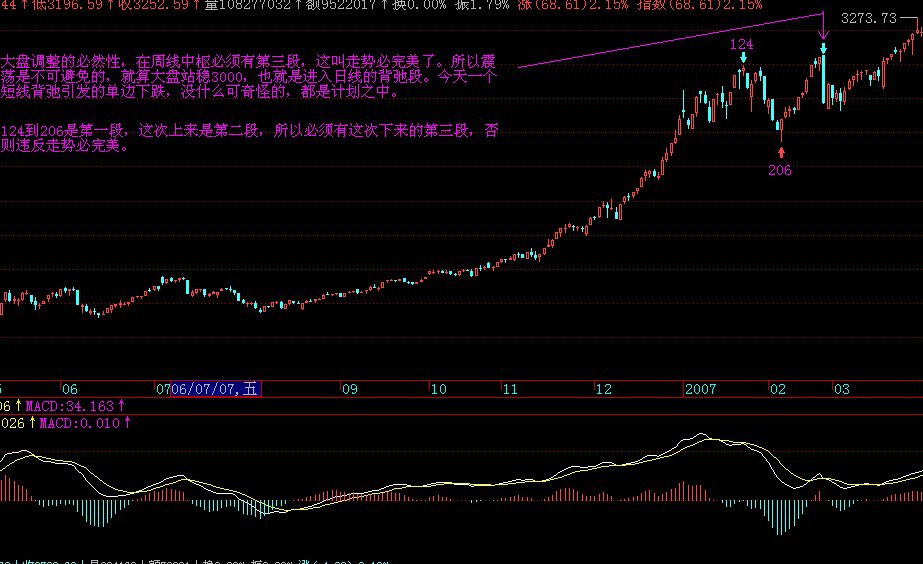
本ID的理论永远都是按图办事，没有死多、死空这些无聊玩意。这次下跌，在中午形成第一个1分钟的中枢，明天只要开盘不马上回到2869之上，那必然要有第二个，然后再进入背弛段，所以，按图操作，走了的，就要继续按图，把该买的买回来。本ID的理论的有效性，通过每一次的震荡，都会无情地告诉你。

回复：
缠中说禅 2007-02-27 16:17:45
[匿名] 下下 2007-02-27 16:14:41
显示谈不上什么日背弛，只是一个分钟线上的背弛，但最大的技术压力是周线的中枢必须有三段。现在走第三段。
-------------------------------------------
哪位同学说说周线中枢上的前两段是哪段到哪段？ （注：日中枢）
==
124到206是第一段，这次上来是第二段，所以必须有这次下来的第三段，否则违反走势必完美。
匿名] 无限 2007-02-15 15:34:07
今天看见女王在联通博杀，和大盘多方的共同努力，说声，你们辛苦了！感谢你们让我们能过个开心年！拜你们所赐，我的几个股票也都启动了（我只买了女王的紫光股份，其他的都是我自己选的股票）。
对于紫光股份，我强烈抗议这个懒庄，真是动一天，歇一周，非典型性老年痴呆症，本来还有更难听的，我实在不好意思再骂您啦。希望您利用好节前的最后一个机会，创立一个金字招牌吧！等了年还有一段时间可以上冲，别等着大家都看跌的时候，你才出来，让人人喊打！
另外一个问题，今天大盘的跳空缺口会以什么用方式补上呢？
谢谢女王！祝你新年快乐，万事如意！在此也给同学们拜个早年！恭喜发财，2007年一起飞黄腾达！
无限 上
==
即使突破3000，震荡的压力还是很大的，以后震荡中补掉的机会多了，明天其实还是有压力的，特别这次上来夹空了不少人，那些人即使明天不出手，过年后还是会出手的。现在并没有绝对的把握一定击毁他们，当然，他们也没有任何把握一定能出手成功，这是大战，现在还很难说胜负。
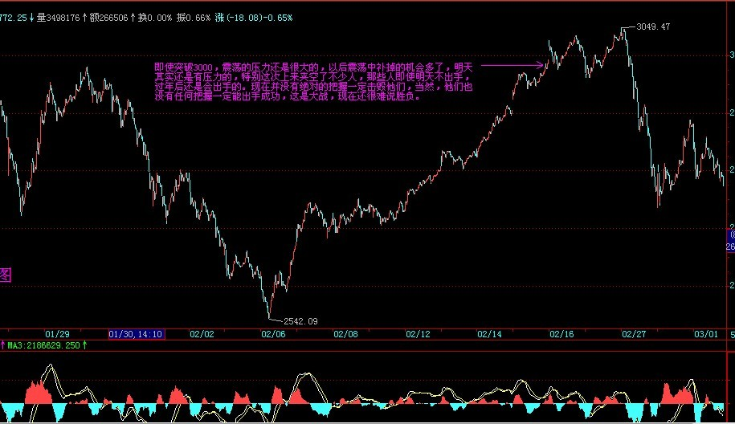
至于个股，本ID今天唯一买入的，就是某些深圳的本地低价股，其他都是在套现，特别像000416、600432等等这些，对于本ID来说已经翻倍的，本ID只能无情地把成本变成0。当然，这些个股，中线都还有潜力，只是对本ID来说，以后就是挣筹码了。至于涨幅不大的，买点出现，本ID会回补的，因为，周线调整结束后，大盘依然要向上。
缠中说禅：2007-02-15 15:28:44
[匿名] 小鸟 2007-02-15 15:24:35
想起来了盘整是只形成一个中枢的，假如在某级别盘整背驰中出掉了，是不是下跌中只用形成一个中枢后就可以再捡回来？
==
次级别背驰后接回来，但必须关照大级别的，一旦有盘不住的倾向，就不要接了，等破位再说。这个问题的精确解决，要等以后的课程。
缠中说禅：2007-02-15
15:29:43
[匿名] 满目山河 2007-02-15 15:24:56
一分钱未花？那挣钱了吗？呵呵。
缠妹妹，今天这课太重要了，谢谢！
==
把货出了当然要挣钱。只是拉抬并没花钱。
缠中说禅：2007-02-15
15:34:46
[匿名] 如初见 2007-02-15 15:29:17
我的重仓股000533今天复牌,5分\30分图均未出现卖点,可长的已超过50%,实在有点怕,缠JJ能不能指点指点,否则,心中没底啊
=
一般现在复牌后震荡几天都继续涨的，如果你技术熟练，就可以参考本课说的方法。此外，最重要的是，如果出了，你能找到更好的股票吗？如果没有，就别出了。当然，短线是可以的，上面抛了，下面拣回来，这种活动，只要有短线买卖点都可以进行，控制好每次的参与量就可以了。例如特别不熟练的，用1/10操作，这样也是一个很好的练习方法。
技术是靠自己练出来的。
缠中说禅：
2007-02-15
15:40:33
[匿名] 外科医生 2007-02-15 15:31:59
恭喜禅妹又战告捷。为你担心呢。这样目标太大了呵。5。03再次加仓联通。
==
联通现在没必要买，本ID说那天，第二天刚好有一个买点，那时候为什么不买。注意，联通的压力大家都看到了，散户千万别买。散户千万别买联通，否则后果自负。除非你是很中线的心态持有，能等到中移动回归那一天，否则根本没必要买联通。
缠中说禅：2007-02-15
15:46:01
[匿名] 外科医生 2007-02-15 15:44:28
联通在你说的第二天那个买点买了今天又买了。多谢禅妹指点。 ==没必要买，一定要看技术图形。没有买点就别买了。
缠中说禅：2007-02-15
15:48:31
小糊小舞 2007-02-15 15:41:01
楼主，还有一个问题请教，具体操作中如何把成本变为0？以后会有课吗？应该不是一定要等股票翻倍然后出一半吧？
==
你在震荡中不断短差，一般不用翻番，你的出一半后成本就是0了。其实，当时的卖点，关键看30分钟或日线的卖点，有了就出手，如果还在连续拉升，那过了1倍也没必要出，等卖点出现，这要灵活点。
缠中说禅：2007-02-15 15:57:15
[匿名] 看聊 2007-02-15 15:50:34
数妹妹，０９３８走的也过于稳健了吧，他和大众公用都有创投概念，可走势却天壤之别．虽然我认为他能上１６，可看别的飞涨心情很不爽．看来我还要悟禅．
==
938主要业绩有问题，所以大家都有所顾忌，但一旦业绩明朗，那就会放手大干了。你想想，最高层都是清华的，清华的股票能有问题吗？这么大的牛市，一个从100元下来的股票，难道连20元都上不去吗？现在主要是货少了，而不是拉不拉得上去的问题。对散户来说，你可以长期关注，然后根据技术图形来打短差，高位卖了，然后就跟别的股票，回跌有大买点了，然后再回补，这样资金效率就高了。等货比较集中了，自然有连续拉升的行情。注意416没有？为什么 业绩公布不好，调整两天后又开始大幅上涨，道理很简单，货干净了。

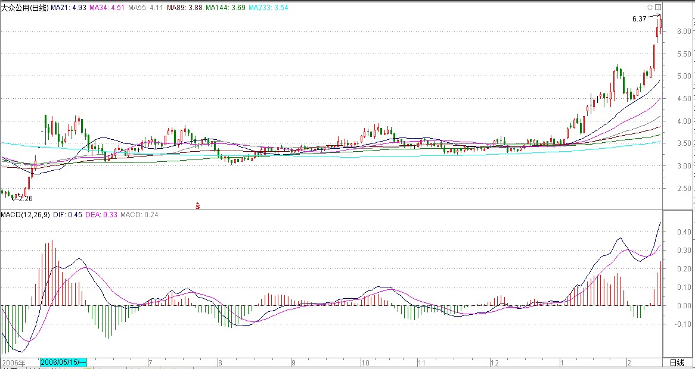
缠中说禅：2007-02-15 16:13:53
[匿名] 红运当头 2007-02-15 16:07:36
请问楼主,象我们这样的散户,在下跌市中,所留部分机动的资金被套捞了怎么办?不等于将主动权交给了别人了吗?
谢谢!
==
你为什么在下跌市里买入？一定要等到买点出现。而且一个中线的仓位，至少应该在一个日线级别的买点介入，这样才有中线运用的价值。
当然，如果你技术不熟练，会找错买点，这必须由技术的提高才能最终解决。否则，技术不过关，这些问题总是存在的。唯一的办法就是，如果技术不过关，那就介入的量要控制好，例如，技术好的，有1万元，都可以先买8千，技术不好的，那就先买3千，涨了不追，跌了，如果中线形态保持，就在次级别买点补进。
当然，如果你连上涨和下跌都分不清，那还是先学技术，什么操作都别进行。
缠中说禅：2007-02-15 16:16:43
[匿名] 兰兰 2007-02-15 16:07:26
缠姐:
请问股票上涨一倍后,出一半股票,成本为0后,做短差时,是用退出来的全部本金来买卖相应股票数量,还是买卖股票数量和原来卖出的股票一样?谢谢回复!!!
==
成本为0前，只补进相同的数量，仓位不增加。成本为0后，抛出后，跌回来，就把抛出的钱，全补进去，这样买回来的数量一定多了，股票才会越来越多。
缠中说禅：2007-02-15 16:20:30
[匿名] 清 2007-02-15 15:46:55
求助！！！！
能帮我看看000690这个股票今天的买卖点各是什么地方出现吗？我今早出了大部分，由于后来一直没有找到买点，后来下午有一波大反弹，也并没有再入，对这个高送股的走势，明天由于除权，我怕K线图都不好把握，能借用您一点时间分析分析吗？
谢谢！盼回复！！！
==
有买点，1110就是一个比1分钟级别还低的买点，如何判断以前说过的。对冲中，如果大的走势没坏，回跌比较多后就可以逐步回补。你不能冀望，一个中线上涨中段的股票，一个1分钟的背驰就可以回跌20%，这不现实。
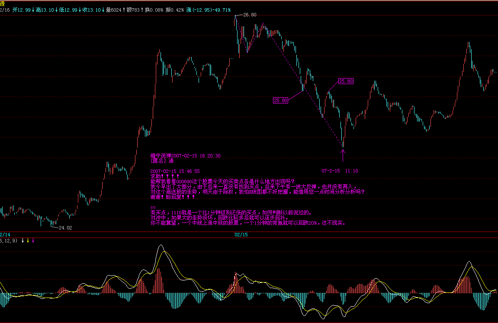
缠中说禅：2007-02-15 16:26:57
[匿名] 白玉兰 2007-02-15 16:23:58
妹妹咋不回答我的问题？
山东人是老8股中表现最差的，是同样的程序选出来，可是就是不一样，这是是先退出还是什么？
==
这股票，里面人还是多，不干净，但已经比以前好多了，现在只能慢慢推着上，一急拉，别人不都出来了，走得慢有时候并不一定是坏事，特别开始的时候。你看777，原来也很麻烦，打跌停的都有，但后来不也走出来了。如果没耐心就先出来吧，按技术去找别的股票，一样的。
缠中说禅：2007-02-15 16:28:11
[匿名] ＮＮ 2007-02-15 16:23:44
从楼主的回帖中可以感觉出，楼主和许多基金管理层是串通一气，请问楼主这样联合作战是否违法？感觉有操控之嫌啊？哈哈
==
本ID阻击他们，谁认识他们？他们配认识本ID吗？配和本ID串通一气吗？
缠中说禅：2007-02-15 16:31:46
[匿名] 外科医生 2007-02-15 16:23:36
请问禅妹：
在一个上升趋势中，如果1分钟没有背驰，5分钟级别会发生背驰吗？
会不会出现次级别没有背驰，而大级别先背驰了呢？
多谢
===
在标准的趋势中，不可能。大级别进入背驰段，然后级别逐步向下进入，这是最标准的状态。除非出现突发事件，使得小级别突然破裂。
缠中说禅：2007-02-16 15:38:26
[匿名] 勤学好问 2007-02-16 15:33:02
请问楼主,是不是日线上的上涨背弛已经有形成的可能了?
==
行情就算创新高，进入最后一段的几率是不少的，所以对现在的行情，不能死多。这次之所以要玩这一下，就是因为要告诉汉奸们，别以为你们想哪出就哪出，就算做空，也轮不到你们先发话。
缠中说禅：
2007-02-16
15:47:20
[匿名] 勤学好问 2007-02-16 15:41:53
上次是大盘60分钟背驰 引发了400多点的爆跌. 所以这次一旦日线上的背驰出现的话,那调整可能就更大一些了. 我的理解对吗,楼主?
==
就算最后一段结束，还是在这里中枢上下震荡。震荡完了，牛市依然继续。
缠中说禅：
2007-02-16
15:48:37
[匿名] aaaa 2007-02-16 15:47:20
楼主，问一下
今天下午大盘5分钟图上14：05是不是背驰
==
所以就有了后面的杀跌，这在技术上很合理，不过尾盘像工行之类出工不出力，本ID有点不齿他们。
大盘出现背驰，但手中股票没出现背弛，也就没楼主说的卖点，但它确实又是随大盘一起跌
楼主，这样的情况究竟卖还是不卖？？
==
不会没有的，只是级别小点而已，一般都是1分钟以下，仔细观察以下就明白。这可以对冲一下，抛了，然后买回来。如果中线的，就不用管了。

缠中说禅：
2007-02-16
15:50:58
两只老虎 2007-02-16 15:39:04
神仙姐姐说的14只股票.我怎么数来数去都有17支(不含联通)。今天的航天股走得不好。昨天、今天管子都不太好，我总担心神仙姐姐会不会把管子拿来应急了。
==
没有，只有14只，最开始5只，然后416那三只，后面是432那5只，还有一个938，就没有了。
缠中说禅：2007-02-16 16:08:09
[匿名] 兰兰 2007-02-16 16:00:04
缠姐没看到,我贴第三遍了
缠姐:
祝姐姐新春愉快!万事如意!我收了一份干净的大礼.多谢！多谢！
有一些问题,烦请姐姐指点,谢谢!(放假就不问了!)
一、以下判断对吗?
1、 2个中枢趋势背驰组成: 1个大一级别中枢+A一段上涨(包含2个本级中枢由次级别三段构成)+B 1个大一级别中枢+C 一段上涨(包含2个本级中枢由次级别三段构成),每一段上涨可以在次一级别背驰卖出,再在大一级别中枢形成的盘整一、二、三类买点买入
==
最好就是先按资金量定好操作的级别，例如30分钟，只在30分钟进入背驰段后，用5、1以及1以下的背驰精确定位后卖出，这样就不用一见1分钟背驰都很紧张去卖，那太累了。
2、1个中枢盘整背驰组成：A 一段上涨(包含2个本级中枢由次级别三段构成)+B 1个大一级别中枢+C 一段上涨(包含2个本级中枢由次级别三段构成)，例如姐姐在第24课上海5分钟图盘整背驰，c段的中枢是30分种中枢?B段有30分钟中枢还是没形成中枢？
==
前面都有精确的定义的，自己去找一下。
二、成本为0后筹码增加前提是在一个大级别上涨中进行是吗？然后在大级别上涨背驰彻底卖出吗？这级别是在2个周线中枢还是月线中枢形成后？如果超长线,n年牛市一股票n年上涨,可以一直不卖?
==
这和你的资金以及行情有关，如果是一个大牛市，当然要到月线背驰再说。盘整的时候短差比较简单，单边上涨中，技术要求比较高。
三、昨天1分钟大盘第三类买点当时形成时如何判断下跌已完成,用macd如果一段红,一段绿,绿的变短了就是底是吗?如果只有一种颜色,以该线变短为准对吗?上涨情况同理吗?
==
前面有，找次次级别的第一类买点。
缠中说禅：2007-02-16 16:22:11
[匿名] aaaa 2007-02-16 16:12:49
趁楼主在，抓紧再问个问题：
600010包子5分钟图上，2月9日14：00左右，我判断为盘整背驰，出了，想等跌下来买，结果没下来多少，后面却猛涨上去了，超郁闷
楼主，我的判断是否有问题？？
==
你看看前面说的本ID理论小学毕业的标准是什么？达到那标准，你就不会判断错了。
教你炒股票31:回复
2007-02-26 16:00:16
博主，来问问题了，上次说的大盘2980开始的5分钟下跌，第一个中枢为什么不是从1301035开始的，而是从1301055开始算起的呢？在1301055至1301310是不是这个中枢的前三段，之后的是中枢的延伸？
---------------------------------
35那个是前面走势类型的中枢，同一个走势类型的中枢，和下跌+盘整里盘整的中枢，要搞清楚区别。
一般标记中枢，都说前三段，后面的延伸，可说可不说，关键你知道是延伸就行，否则每个中枢都说那么仔细，这文章就没法写，太长了。
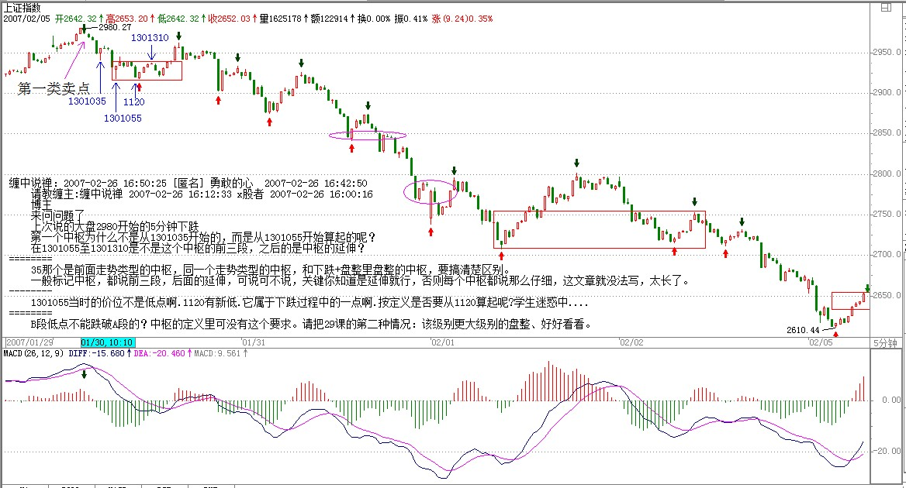
缠中说禅：
2007-02-26
16:25:09
[匿名] 小小的我
2007-02-26 15:53:55
先给妹妹拜晚年！
一个春节都坐在电脑前学习缠中说禅理论，觉得有一点点懂了。
于是，根据000761本钢5分钟图，以为：02051030-02150935 A段，之前有个中枢；接下去至02161500B段，构成一个较大的盘整中枢，同时MACD回抽0轴，今天开盘起走C段，上午10:45股价创新高，C段红柱小于A段，想必背驰，想起妹妹说过的有卖点一定要卖的，于是卖了，可收盘咋还创新高了呢？妹妹给看看俺的问题出在哪儿啦，那地方不叫背驰啊？
另，工行上午09:58，一分钟图4.99是不是第一类买点啊？而在5分钟上，它没有前一个中枢的高点4.98，算不算第二类买点啊？
俺对缠理论入迷了，妹妹一定要回答啊！
==
要搞清楚，背弛必要有调整，但不必然有大调整，如果是盘整背弛，那往往转化成第三类买点。对于小级别的背弛是否产生大调整，必须是从大级别看起，这也是区间套方法所说的。例如5分钟的背弛，你必须先要看30分钟是否进如背驰段的可能，好象这，30分钟在主升段的，那5分钟的背弛往往就是一个盘中的小调整就完成了，这种背驰就没多大操作的意义了。否则1分钟背驰都每个弄一下，又不知道如何回补，那是很累的。一般这种背弛，盘中对冲一下就可以了。但那些符合区间套的背驰，就要充分注意了。
缠中说禅：2007-02-26 16:30:23
[匿名] 勇敢的心 2007-02-26 16:21:59
请教缠主:100万的资金一天进6000万流通盘的股票,是否会被套住.日换手5%.谢谢!
==
是否套住和你买的位置有关，100万资金不算什么，一般来说，0.5%流通盘以下的，可以忽略。
缠中说禅：2007-02-26 16:32:11
[匿名] 炼铁设备 2007-02-26 16:27:25
其实散户挣钱真的很简单，就像这14只股票，基本的节奏都不大一样，利用技术，把涨幅大的换成涨幅小的，这样的利用率就高了
“把涨幅大的换成涨幅小的，”这句我理解不了。是不是我把１７。４０ １５。２０换成７，８元的股票？
==
涨的多，有大级别卖点的，可以先出来，没必要参与盘整，找那些有较大买点的，这样利用率就高了。
缠中说禅：2007-02-26 16:34:52
[匿名] 兰兰 2007-02-26 16:26:31
缠姐好！兰兰报到。
关于资金管理,想听听姐姐高见。如果已买了若干股票在上涨中,隔一小段时间有一点小小钱,姐姐不建议再买这些股票;如果用这些钱买新股票,那么所买股票会多于2、3只,姐姐也不主张这么买，如何管理运用这些小小钱？
==
前面说过了，买之前必须认真分析，有足够信心才买，买就一次性买，留点机动性资金就可以。千万别追着买，股票几千只，不要一棵树吊死。
缠中说禅：2007-02-26 16:40:55
[匿名] 请教 2007-02-26 16:19:36
缠师，盘整背驰中没看明白：其中提到的ABC三段，是指组成这段盘整走势中枢的三段重叠走势吗？
==
中枢里的ABC三段，站在次级别上看，就是三个完成的走势类型的叠加，这 很好理解的。
缠中说禅：2007-02-26 16:44:43
[匿名] mmhh 2007-02-26 16:40:18
禅mm好！祝新年快乐！
请问000962五分钟好像要背驰，应该如何操作更好点。
谢谢！不好意思，俺的问题可能浅薄了点，但俺也不能不懂装懂啊。再次请缠mm解释解释！
再次谢谢！
=
进入背弛段，要找精确的卖点的，就看1分钟以及以下的，这叫区间套方法，前面有一个课是专门说这个的。但对小级别的背驰，是否能引发大的调整，必须要看大级别是否进如背驰段。上面有关这个问题，刚回答了，请参考。
缠中说禅：2007-02-26 16:50:25
上次说的大盘2980开始的5分钟下跌
第一个中枢为什么不是从1301035开始的，而是从1301055开始算起的呢？
在1301055至1301310是不是这个中枢的前三段，之后的是中枢的延伸？
-- 35那个是前面走势类型的中枢，同一个走势类型的中枢，和下跌+盘整里盘整的中枢，要搞清楚区别。
一般标记中枢，都说前三段，后面的延伸，可说可不说，关键你知道是延伸就行，否则每个中枢都说那么仔细，这文章就没法写，太长了。
--------
1301055当时的价位不是低点啊.1120有新低.它属于下跌过程中的一点啊.按定义是否要从1120算起呢?学生迷惑中....
=
B段低点不能跌破A段的？中枢的定义里可没有这个要求。请把29课的第二种情况：该级别更大级别的盘整、好好看看。
缠中说禅：2007-02-26 16:55:37
[匿名] momo 2007-02-26 16:53:12
600028 周，月线都不是老师说的值得弄的股票，但是日以下级别的就还可以，那是不是也要放弃参与。
==
如果你资金量不大，又能短线操作，那看30分钟的买点就足够了。当然，最好日线不能在背弛段里。
缠中说禅：2007-02-26 16:56:47
[匿名] 潜水员 2007-02-26 16:54:56
很多人都在潜水学习，不敢浮出水面（害怕学艺不精）。大家都在发奋学习，我也是！
==
学习不怕犯错误的，这样实战才少犯。
缠中说禅：2007-02-26 17:03:42
[匿名] 风冷清秋 2007-02-26 16:00:15
缠姐,山东人走得好弱啊
==
那股票一早就说了，里面有四伙人，本ID最近都在忙其他的，暂时没时间和他们折腾，一个个来，本ID可没14只手。
缠中说禅：2007-02-26 17:05:53
[匿名] 笨笨 2007-02-26 17:01:35
楼主~ 很惭愧 原来的600036 套在里面 上次按你的理论很努力在弄短差，好不容易搬平， 今天又挂了~
能不能 指点一下 万分感谢！
==
首先，你买的位置就不对，以后千万别追高买股票。其次，要耐心，该股票中线问题不大，就当一个学习的品种，中信快上来了，会动起来的 。
缠中说禅：
2007-02-26 17:07:19
[匿名] 勇敢的心 2007-02-26 17:05:50
请教缠主：
35那个是前面走势类型的中枢，同一个走势类型的中枢，和下跌+盘整里盘整的中枢，要搞清楚区别。
－－－－－－－－
1055连短期均线都没站上能否算a段?学生还是不明白,笨!请多指点.
=
这个均线没什么关系，关键是次级别把原来的走势类型给完结了。如何完结，请看第29课。
缠中说禅：2007-02-26 17:14:32
[匿名] 无敌槟榔 2007-02-26 17:04:45
根据LZ文章内容,今日重仓建了66,为本地与低价概念,但介入位置不是很理想,未能在上午10:00动手,结果跑了一段路才上车.
这将是第二次利用LZ理论进行操作,上次是试手,这次把我小本买卖集中干66,主要练习做短差,将本金分成5份,4份买货,1份做预备队,买货的半量为短差最大范围,一直操作到LZ说的大级别卖点清仓.改变以前以盈亏百分比判断清仓的方式.
有以下问题请LZ指点:
1\短差最理想的目的是将成本下1/3还是1/2，剔除价格大幅上升，例如缓升，每天震幅在5%右，时间为1个月，不计其他因素，本人倾向前者；
2\以2个月为判断点，买卖系统是以日线加60，还是60加30为妥；
谢谢
==
买的位置确实不好，就算是10点买，也只是一个小级别的第三类买点。不过，资金不大，纯练习也可以了。短差，是按图操作，不要设定目标，不要给自己一个框，如果你资金很小，那每天可以找一个对冲的位置，这样等于每天都有一个短差，这个一般看1分钟的都能找到。而5分钟、30分钟这些级别，能把成本降很多，特别那些活跃的，震荡幅度大的，一次30分钟级别的操作，如果资金不大，基本能把成本至少降10%以上。
注意，有了中枢，均线只能当参考。
缠中说禅：2007-02-26 17:16:55
[匿名] 请教 2007-02-26 17:07:26
或者，难道整个盘整走势本身就是个中枢，而不像趋势那样，有前面的连接段和后面的背驰段？
==
某级别的盘整是包含相应级别一个中枢的走势类型，盘整和中枢不是一个概念，像中枢的延伸、扩展等都在盘整里。盘整是一个不精确的概念，一定要用中枢的精确来精确之，
缠中说禅：2007-02-26 17:23:51
[匿名] 缠文观止 2007-02-26 15:58:51
楼主好！麻烦楼主有时间把前面的内容能整理一下，补充完整，修正一些前后容易误会的概念。
真的很难学啊，还没有哪个技术学得这么让人费劲啊。
==
从中枢开始，概念都很明确的，一般人经常把中枢之前的混在后面，注意不要这样就没问题了。有了中枢，前面那些吻的湿的就可以不看了，只能当参考。
缠中说禅：2007-02-26 17:27:04
[匿名] narcissus 2007-02-26 17:23:24
女神妹妹:
潜水学习理论很久,今天冒泡出来恭贺女神妹妹新年万事胜意!并祝妹妹除奸顺利,生活美好!有个问题股票请教似乎和所学理论相悖,000922,无论30分钟还是日线,一直背弛但是一直涨,百思不解.请女神妹妹方便时候一定不吝赐教!这里先行顿首谢过!
==
S阿继连日线的背弛段都没出现过，怎么会有日线的背弛？如果用MACD辅助，连0轴都没有回抽，怎么会有背弛？
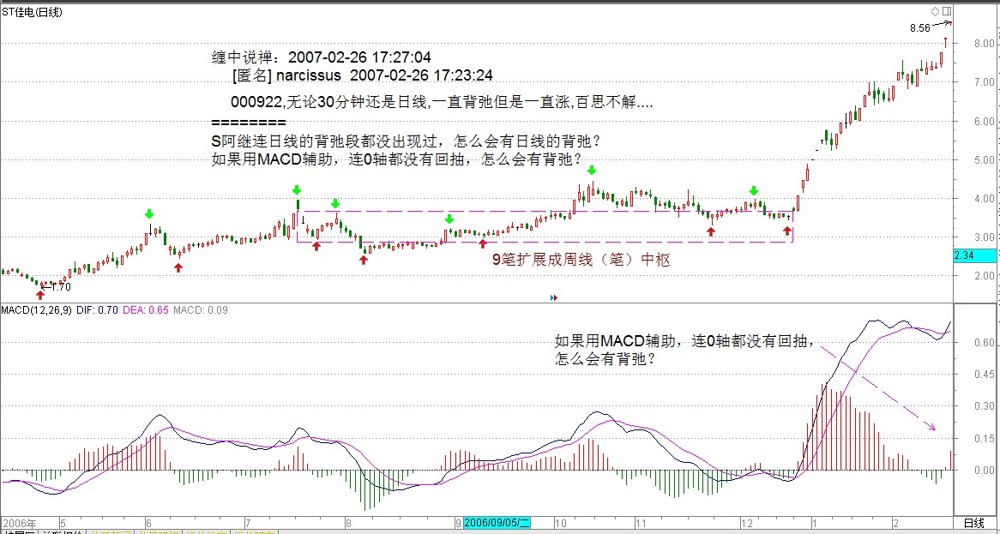
缠中说禅：
2007-02-26 21:10:15
[匿名] 楚狂人 2007-02-26 17:31:18
缠主：
关于走势类型完成的问题，麻烦你指点：某级别一个走势类型的完成是否最少含有两个以上同级别中枢？构成中枢的3段次级别走势是否要含有6个以上的中枢？或b段为一个高一级别的盘整？关于走势类型何为完成？及级别分辨上的问题始终甚多疑惑，请指点？
==
这类问题应该清楚，走势类型的完成怎么会最少含有两个以上同级别中枢？盘整难道不是走势类型？任何级别盘整怎么完成都只能是一个相应级别的中枢。先把最基础的概念搞清楚，否则越到后来越乱。
至于趋势如何转折的，第29课不已经说得很清楚了。三种情况的分类，这里就没必要再说了。
缠中说禅：2007-02-26 21:22:12
[匿名] 大盘 2007-02-26 20:19:26
春节假期对博主的炒股课程文章重新学习了一遍，有了更深的体会，当然细节方面仍然有不少不懂的地方，特别是对于盘整走势的判断问题，归纳起来，学习盘整走势中遇到的疑难问题有如下几个方面：
==
粗略看了一下你的问题，都是基本概念没搞清楚。
（1）盘整走势结束后发生转折的问题：
盘整走势结束后如果接下来是上涨走势，一定有某级别离开盘整中枢低点的下跌背驰段吗？如果是盘整+下跌，又一定有离开盘整中枢高点的上升背驰段吗？
====
盘整怎么会有背弛？盘整只能有盘整背弛。把背弛和盘整背弛的基本概念先分清楚。
（2）盘整中枢的方向判断问题：
虽然博主的中枢定义本身并没有提到构成中枢的三段走势的起始方向判断问题，但是博主在相关回帖当中说过，简单来说，上涨趋势中中枢三段的方向依次是下-上-下，下跌是上-下-上，那么盘整当中的中枢方向是如何确定的呢，是根据盘整走势前面的走势来判断吗？例如对于下跌+盘整走势的组合，盘整中枢方向是下-上-下三段吗，上涨+盘整走势的组合，盘整中枢方向是上-下-上吗？
===
盘整哪里有什么方向，只有趋势才有方向，这是最基本的概念。 中枢就是中枢，哪里有什么盘整中枢、趋势中枢之分？盘整和趋势的区别只在于盘整只有一个相应级别的中枢，趋势有两个以上相应级别的中枢。
缠中说禅：
2007-02-26
21:41:35
思朴 2007-02-26 21:22:27
呵呵，你都这么牛了，怎么还在意那区区的点击率？过年好。大盘高风险的时候请提示一下，说白了，现在赚钱很容易，但能看得出风险的，对多数人来说，就不那么容易了。
==
点击代表有多少人看了，看了才有可能受益，这就是点击唯一的用处。
至于说到风险，那是一般性的无聊思维。明白本ID的理论，就没有这类问题了。本ID的理论，只会考虑类似的问题，进入背弛段了吗？背弛了吗？这都是具体的、可操作性的问题。风险这类虚无飘渺的问题，本ID没兴趣。站在所谓的风险角度，股票都是废纸，这就是真正的风险。
缠中说禅：
2007-02-26
21:46:44
[匿名] 傻子 2007-02-26 21:32:28
先谢谢白玉兰妹妹，确实卖了铜业，也没什么后悔的，进了600269，也在涨，主要是没学会缠理，比较着急，心急如焚的感觉。基础太差了，不知道从何学起，星期天去书店看看，有关均线的书，请给推荐本好书，谢谢
==
什么均线那些没必要知道，把中枢等搞清楚，没均线一样可以。没受其他理论影响，反而好学。
缠中说禅：2007-02-26 21:56:50
星星 2007-02-26 21:32:09
楼主在吗？有些问题想请你回复一下，谢谢！！！
1、北辰实业30分钟图06-12-07 10:00产生背驰，按楼主的理论，此次背驰所产生的走势至少应触及上一个中枢的最高点即6.15，为什么以后的走势至今还没有触及这一点？？？
==
你看30分钟的MACD符合背弛的条件吗？
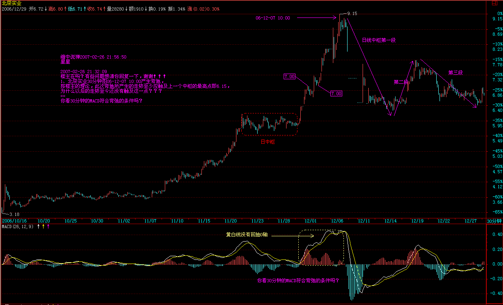
2、如何判断一个盘整的开始与结束？比如说一个上涨趋势完成后，对应的走势必然是盘整或下跌，那么当形成一个中枢的时候，我如何判断他是一个盘整还是一个下跌趋势的第一个中枢，是不是应该等等看？还有，趋势可以根据背驰来判断其结束，那么盘整用什么来判断其结束？
==
为什么有第三类买点或卖点，把这问题想明白没有？
3、上涨的中枢是下上下，下跌的中枢是上下上，那么一个盘整的中枢是什么？？？
==
怎么到现在还问这种问题？盘整的中枢和趋势的中枢又有什么不同？中枢就是中枢，哪里有什么盘整、趋势的。你可以说是趋势中产生的中枢，但不可以说盘整中产生的中枢，有了中枢才可能有盘整。
4、看楼主的意思，不应该预判走势的发展方向，应该等其完成后再来判断，那是不是就是说不可能提前判断一个上涨或下跌的趋势，那我们为什么说这一轮牛市是一个上升趋势呢，为什么不可能是一个盘整呢，完成一个中枢就结束，这样的话，走势必完美又有什么意义呢，不就成典型的马后炮了吗？？？
==
又是糊涂概念。走势必完美和一定上涨盘整没任何关系，走势必完美等价说中枢一定可以形成，先把概念搞清楚，任何级别都不可能永远不形成中枢，这才是走势必完美的意思。
5、楼主可否将大盘自05年998点见底后的日线中枢给指一下，谢谢！
==
以前文章都有。
6、楼主讲了这么多理论，仔细学习后发现从理论上还可以理解一点，但现在发现最大的问题是无法准确的判断中枢，这可要了命了，希望楼主能开一讲，专门讲一下判断中枢的方法，找一张图按步骤讲一下判断中枢的要点，比如K线组合什么的，谢谢！
==
判别中枢就是看图认字，只要符合中枢定义的就是中枢，就这么简单，先把定义搞清楚。
缠中说禅：2007-02-26 21:59:21
[匿名] 竹影 2007-02-26 21:47:46
拜读了楼主的文章，请教一句：2市1000多股票有很多是不符合贵理论中的经典走势。那么在选股的时候是不是毫不犹豫的把不符合贵理论经典走势的股票剔除。即使基本面多么好。谢谢
==
没有任何一只股票的走势不符合本ID理论的，如果连这点都不明白，那就是没学清楚。先从中枢入手好好学，学明白了，看任何图都如看自己的掌纹一样。
缠中说禅：2007-02-26 22:02:31
[匿名] 天山飞狐 2007-02-26 21:47:54
缠主,我这样的认识对不对?即构成中枢的三段走势,下上下或上下上三段,在次级别图中,上下段都是依次独立完整的一段趋势,而非盘整;所以在次级别图上,上或下都至少包含该级别的两个中枢.
==
先把最基本的概念搞清楚。什么叫走势类型？盘整不是走势类型吗？
缠中说禅：2007-02-26 22:11:34
发现很多人连最基本的概念都没搞清楚。
走势类型：趋势（上涨、下跌）、盘整。
中枢是最原始的，走势必完美是针对中枢必然形成说的，任何级别都不存在永远不形成中枢的走势，任何走势最终都必然形成某个走势类型或者他们的叠加。任何市场的走势都必然可以分级别成相同级别走势类型的叠加。趋势和盘整的唯一区别，就是包含的相应级别中枢前者必须两个以上，而后者只能一个。
这些都是最基本的概念，如果都搞不清楚，那是没法看下去的。
大家继续努力吧，本ID的理论是一个纯粹的数学理论，估计孔男人之类的文科生有点困难，但还是不难的，多点努力吧。
太晚，先下，再见。
缠中说禅：2007-02-27 15:39:28
[匿名] 阿甘 2007-02-27 15:37:38
老大,我也买了0029,怎么尾市砸下来了
=
000029是什么？房地产股票，本ID从来不碰。
缠中说禅：2007-02-27 15:41:07
[匿名] 淡定 2007-02-27 15:39:25
楼主好！
今天过得不容易啊，本来留了一半的清醒想高位出掉手中的货的，可一时犹豫下下午又进了，郁闷ING！
另外，请问楼主是否真有市场传闻的重大利空啊？
==
第一个中枢才刚出现，回补什么？按图操作，利空是无意义的。
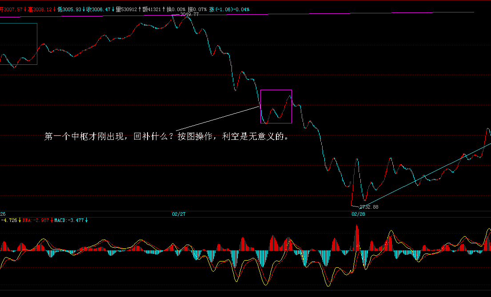
(前期的1分中枢，为递归后的笔中枢）
缠中说禅：2007-02-27 15:46:07
[匿名] NOVEMBER 2007-02-27 15:44:13
缠主能帮忙看看600690么？下面感觉有吻的趋势该补仓还是斩？
==
不要跌了才问怎么样？背弛肯定是出现在涨之中的，到跌的时候，卖点早过了。本ID反复说过，宁愿卖早，不能卖晚。
缠中说禅：2007-02-27 16:04:50
[匿名] 新学禅论 2007-02-27 15:57:16
博主，学习你的理论才几个星期，进度有点慢。有个问题请教下，一个级别的上涨或下跌中，要有两个中枢 ，在开始上涨和下跌前的那个中枢算不算在内。如600497，我看在20050727-20051025日线上涨中间只有20050920-20051014一个日线中枢，如果不算20050727前的那个中枢，只有一个日线中枢啊。
========
之前之后，都属于另外的走势类型，不能混在一起。
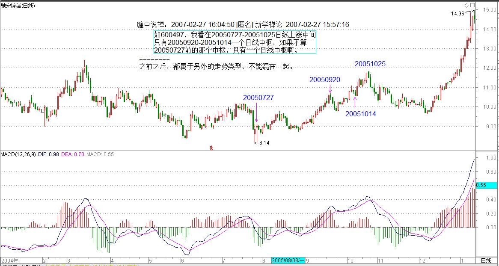
缠中说禅：2007-02-27 16:12:22
[匿名] 酒吧心情 2007-02-27 16:04:22
本ID的理论永远都是按图办事，没有死多、死空这些无聊玩意。这次下跌，在中午形成第一个1分钟的中枢，明天只要开盘不马上回到2869之上，那必然要有第二个，然后再进入背弛段，所以，按图操作，走了的，就要继续按图，把该买的买回来。本ID的理论的有效性，通过每一次的震荡，都会无情地告诉你。
--------
缠JJ, 我看不出1分钟的中枢,但是我看5分钟就能看出来2869.30是下跌第一个中枢的低点,请老师再详细的知道下,如何在1分钟看出来的.
个人感觉这次和上次的5分钟是一样的,只是这个级别更高而已,所以一直拿上次老师的点评在做参考,希望自己的水平能有提高.
我个人人为现在要等5分钟的第二个中枢出现,形成下跌走势,然后寻找背弛点..
请老师指教!!!不胜感激!
========
你看那几根线，上下都没有1分钟三根以上的重叠，所以不能算是有1分钟的中枢。在最弱的情况下，明天1分钟第二中枢出现后，背弛，然后形成一个大的5分钟中枢，甚至延伸为30分钟的，然后再下跌，这种可能性是不能排除的。没必要预测，看当下的图就可以。
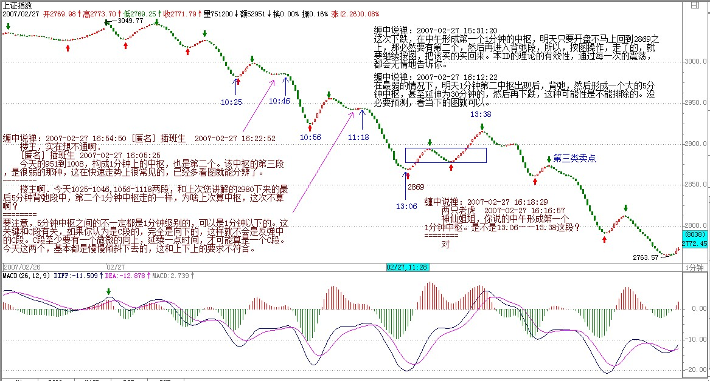
缠中说禅：2007-02-27 16:01:12
[匿名] 无限 2007-02-27 15:57:42
女王好！
今天早晨我看出大盘5分钟和30分钟的背驰，10点半左右，我就在qq群中告诉大家了，然后我把紫光股份抛了，小赚了点。
但是可惜的是，我没有想到大盘跌得这么厉害，加上对我手中的其他股票有点信心，就没有抛。当时也想到全跑，后来自己否定了。结果丝绸股份从最高涨停跌回到起点，其他两个股票都跌停了。
以后还是要看图作业，不能加个人感情。这点和修道，一个道理。无为而无不为
现在我半舱，继续等大盘至少5分钟，甚至30分钟的底部背驰中，但是不太会选股，不知道那个股能快些。
谢谢女王的背驰理论，让我逃过一次被套。
========
回补不能着急，连中枢都不形成，意味着趋势很强烈，就一定要耐心等待中枢的出现。两个中枢以后出现背弛，那这就很安全的回补点了。
缠中说禅：2007-02-27 16:02:29
[匿名] 苜蓿宝宝 2007-02-27 15:59:40
楼主，是不是出现日线背驰的可能性很大啊？怎么越看越象啊！！！
========
显示谈不上什么日背弛，只是一个分钟线上的背弛，但最大的技术压力是周线的中枢必须有三段。现在走第三段。
缠中说禅：2007-02-27 16:15:26
[匿名] abc 2007-02-27 16:09:05
今天的背驰用你教的ＭＡＣＤ怎么看不出来呀？能不能详细讲解一下？
========
你好好研究一下15分钟的图，那可能比较清晰一点。然后用区间套的看1分钟
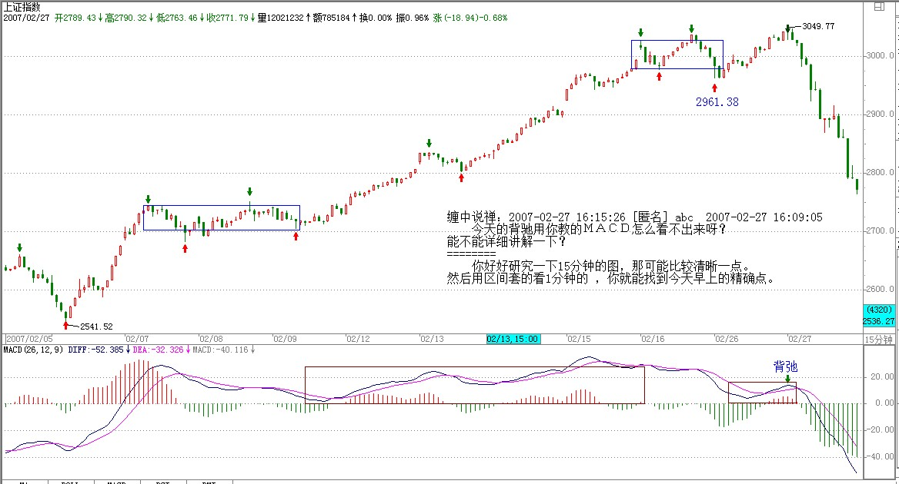
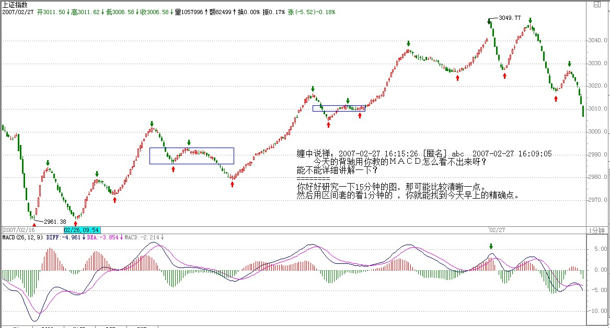
缠中说禅：2007-02-27 16:20:05
[匿名] 职业轿夫 2007-02-27 16:00:11
那些个骂人的东西，怎么这么没股品呢！
不就是个跌停板吗？怕亏玩什么股票啊！
========
这些都无所谓的，关键你自己把技术把握好了，如果这次没判断好，就要总结经验。市场机会多多，关键是不能糊涂。
缠中说禅：2007-02-27 16:24:56
[匿名] 空杯 2007-02-27 16:19:47
给楼主提个建议：
尽量不要将你的行动和情况在此博客里暴露的太多，以免被小人找到你的真实行综。因为这社会上龌龊的鸟人太多，一旦你的行动损害了他们的利益，就会遭到他们的报复，什么无耻的手段都有可能。因此除了传道授业，实际的情况在此博客中出现越少越有安全。
愿你长久地在此虚拟世界中做我们这些有缘人的女王，保佑我们这些小散在股海中锻炼并不断成长。可能是多虑了。
========
这无所谓的，这里有很多奸细，这本ID早就清楚。有些话，是故意说给这些人听的，就像今天联通上，有人吃了哑巴亏，本ID既然敢明目张胆让汉奸砸，为什么本ID就不可以先砸，凭什么让汉奸在高位砸？要砸，低位来，不低，本ID可不回补。
缠中说禅：2007-02-27 16:28:11
[匿名] 小鸟 2007-02-27 16:23:12
请问妹妹：580007在1分钟图上10：55到11：18是不是一个中枢呀？
========
那算，但5分钟是标准的主跌段，所以1分钟上任何的走势，其实意义不大，要找背弛点，一点要至少5分钟进入背弛段，这样才有意义。
缠中说禅：2007-02-27 16:29:52 两只老虎 2007-02-27 16:26:00
谢谢神仙姐姐的回答
神仙姐姐，“如果明天继续形成第二个中枢，那今天躺地板，明天还要经受下跌的痛苦。不如今天卖了明天低了再捡回来。”这种想法对吗？
========
这样不对，应该是背弛有卖点的时候走， 有买点再买回来，如果错了，就找反弹的出现的卖点出来。
缠中说禅：2007-02-27 16:33:19
[匿名] 小鸟 2007-02-27 16:28:13
请问妹妹：
580007在1分钟图上10：55到11：18是不是一个中枢呀？
在下午14：20到14：35是不是第二个中枢？
然后出现背驰了？
========
没有背弛，有也是1分钟以下级别的。而且也不是第二中枢，前面还有。
缠中说禅：2007-02-27 16:34:19
[匿名] 青青子衿 2007-02-27 16:31:03
缠妹妹,周线第三段的完成岂不还有一百多点的下跌空间,一定要打破前期低点2541背驰后来确认吗?学艺不精,昨天跑了,今天又接了一点.
============
错了就错了，关键要总结经验，一定要等待背弛以后才接。
缠中说禅：2007-02-27 16:42:16
[匿名] 有女万事足 2007-02-27 16:38:21
请教博主：
124到206是第一段，这次上来是第二段，所以必须有这次下来的第三段，否则违反走势必完美。
--------
为什么必须走完第三段，走势才能完美。这个“三”是如何确定的？前面问过这个“三”，博主可能太忙，没空解答。这里再问一次。难道真是跟自相似有关？我本人不买股票，只是多年在某工程领域内做过一点自相似性的研究，没什么好的结果，似乎也只能作事后的刻画，与其他指标相关的。后毕业，也没有继续去研究精细的结构。偶然看到博主的理论，所以有这一问。博主训读论语，所采用的方法、入眼角度，极有说服力。请博主继续下去。
========
没有三段，哪里有重叠？这就意味着永远向一个方向去，而这是不可能的。这个中枢结构，确实和自相似有关，但不需要用到类似的概念。
缠中说禅：2007-02-27 16:44:32
[匿名] 三藏 2007-02-27 16:40:16
老大，对于一个只有一个中枢的走势，其后发生了转折，一定是发生了盘整背驰吗？如果是，是发生在C段吗？？这个问题想了好久了
========
这里会有两重，一是A与C之间的比较产生的盘整背弛，二是C内部的次级别背弛，一般来说，这两者有着类似区间套的关系。
缠中说禅：2007-02-27 16:46:59
[匿名] QQ 2007-02-27 16:42:33
缠mm帮分析一下大盘从2541-3049点位5min级别的图吧，自己感觉好多中枢啊
========
没必要，如果大盘已经形成30分钟的中枢，那么就看30分钟的就可以，然后从30分钟的第二个开始，密切关注是否进入背弛段。然后再按区间套来确定精确背弛。
缠中说禅：2007-02-27 16:48:06
[匿名] salmon 2007-02-27 16:42:38
今天好惨，教训呀，今天早上逢高出了部分股票，然后一再叮嘱自己今天坚决不买股票，可是下午仍然忍不住去挂了单，结果全部光荣被套！
========
按图操作。没有背弛，不能回补。
缠中说禅：2007-02-27 16:54:50 [匿名] 插班生 2007-02-27 16:22:52
楼主，实在想不通啊．
[匿名] 插班生 2007-02-27 16:05:25
今天的951到1008，构成1分钟上的中枢，也是第二个。该中枢的第三段，是很弱的那种，这在快速走势上很常见的，已经多看图就能分辨了。
--------
楼主啊．今天1025-1046,1056-1118两段，和上次您讲解的2980下来的最后5分钟背弛段中，第二个1分钟中枢走的一样，为啥上次算中枢，这次不算啊？
========
要注意，5分钟中枢之间的不一定都是1分钟级别的，可以是1分钟以下的。这关键和C段有关，如果你认为是C段的，完全是向下的，这样就不会是反弹中的C段。C段至少要有一个微微的向上，延续一点时间，才可能算是一个C段。今天这两个，基本都是慢慢倾斜下去的，这和上下上的要求不符合。

缠中说禅：2007-02-27 16:56:04
[匿名] 您好 2007-02-27 16:54:36
ＬＺ：您好
大盘不好时，无论个股是否应全部出掉．比如今天！谢谢！
========
应该是进入较大级别的背弛就要出，不能跌了才问出不出。
缠中说禅：2007-02-27 16:57:21
[匿名] 勇敢的心 2007-02-27 16:54:32
请教缠主：有时盘中瞬间的抛单打低5%以上影响中枢的判断，如000990在9：35到11点，这段算中枢吗？
========
瞬间的，如果在1分钟上不形成重叠，那不算。

缠中说禅：2007-02-27 17:18:33
[匿名] 缠文观止 2007-02-27 17:06:13 缠中说禅 2007-02-27 16:17:45
========
124到206是第一段，这次上来是第二段，所以必须有这次下来的第三段，否则违反走势必完美。
--------
楼主好！
124－206第一段，不是5分钟下跌趋势吗？这次上来的第二段，最多也就30分钟走势。他们怎么能构成周线中枢的前两段呢？
========
你说的对，上面说的不太严谨，周线中枢，首先要形成一个日线中枢，然后扩张开去，严格说，目前只是第一段里面的第三小段。但这里的情况有点复杂，涉及一些没说到的内容，要把这个中枢问题说清楚，还需要等两次课程，学完这两次，对中枢的了解会更深刻，请耐心等等。
缠中说禅：2007-02-27 17:22:02 [匿名] 中间体 2007-02-27 17:18:00
缠姐, 记得我上次问过你, 根据周线完美, 要有第三段下跌, 但你没回答, 我后来又想, 第三段不下来的话,就是没形成中枢, 也是对的. 这是不是走进了先有蛋还是先有鸡的矛盾中.
========
如果是不形成中枢的，那就不会出现任何的背弛，这才是问题的关键。
缠中说禅：2007-02-27 17:23:58 5点半了，先下，明天继续说中枢。
缠中说禅：2007-02-27 16:59:10
[匿名] QQ 2007-02-27 16:57:06
谢谢缠mm的回答，现20%仓位，既然大盘30min级别已形成了两个中枢，有可能进入背弛段，风险加大，请问可以在哪个级别背弛时回补。
========
那是比喻，现在大盘早形成背弛了，否则哪里有今天的下跌？现在考虑的是跌下来的背弛问题了，具体，在第一贴里说了。
缠中说禅：2007-02-27 17:00:14
[匿名] 深潜 2007-02-27 16:57:54
问声老师好。
今天没出，都板上了。没想到1分钟产生如此大的力量。
继续学习。老师辛苦了。
========
理解错误，是区间套的力量，这不光光是1分钟的问题，以上级别也进入背弛段。
缠中说禅：2007-02-27 17:03:04
[匿名] 套住了 2007-02-27 16:49:33
000915-600069-000938-002012还能拿着吗？套住了，谢谢！
========
中线都没问题，短线有一个大的震荡，估计你买的位置肯定不是在买点上买的，这种习惯要改变。
缠中说禅2007-02-27 17:07:39 [举报]
[匿名] 红欲然 2007-02-27 17:01:50
姐姐 我今天操作比较失败 早上看势头不对全部出了 不过已经下来一段了 下午看099（000099）在5.70有个1分钟背弛又全仓进去 结果尾盘被死死按在地板上 请问姐姐 在现在这种情况下 明天一开盘是不是先不计代价先出来 等跌势尽了 形成第二个中枢背弛后再买进
==
要等真背弛才回补。你买的位置不对，如果1分钟的下跌已经引发5分钟的主跌，这时候就算有背弛也不能用，为什么？根据区间套，要等5分钟进入背弛段。 你那位置问题不大，就当弄了一个短差，把成本降低了。
000099中信海直：
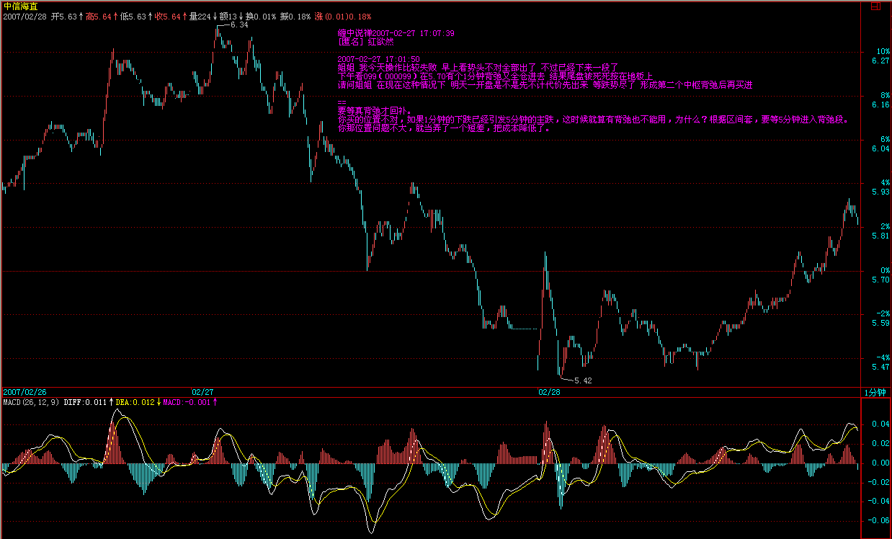
教你炒股票31课部分回复
 (31课后回复太多，加在这里) (31课后回复太多，加在这里)
缠中说禅 2007-02-15 15:46:01
[匿名] 外科医生 2007-02-15 15:44:28
联通在你说的第二天那个买点买了；今天又买了。多谢禅妹指点。
==没必要买，一定要看技术图形。没有买点就别买了。
缠中说禅 2007-02-15
15:51:55
[匿名] 夜雨 2007-02-15 15:39:00
老师厉害啊，春节快乐，先预祝一下，000999，今天下午14.50又出现了5分钟买点，同学们关注啊，请问老师，600080今天有卖点吗，我看不清楚啊，不过也先出了，学习您的话，宁可卖早，也不要卖迟，机会很多
==
你说S股中线会有问题吗？999难道不是S股？
缠中说禅 2007-02-15 16:17:25
[匿名] 侯长老 2007-02-15 16:15:30
周六开始有4周假期，晚上到上海，估计30后半夜能到家。给博主和各位学友拜个早年。祝愿大家万事如意，新春愉快！
==
同贺，一路顺风。
缠中说禅 2007-02-15 16:20:30
[[匿名] 小明 2007-02-15 16:10:04
告诉大家 我准备放弃做短线了，拿着一个股持有不放，做中长线投资。
做短线太累了，往往还吃力不讨好。毕竟我们不是庄，能够主动利用各种背驰造成价格上的波差（波动），所以还不如像林园那样，多潇洒！
当然我不可能像他那样拿那么长时间，我说的中长线大概就几个月。
其他的时间就不每天盯着盘面看了，等晚上上网的闲暇时间顺便打开行情软件看看收盘价格就可以了。
然后其他的时间干点别的，学学论语啊，关心关心qq上的mm啊等等。
请缠mm指正！
==
你可以把操作的级别提高点，这样频率就降低，这样也很轻松的。
缠中说禅 2007-02-15 16:31:46
[缠中说禅 2007-02-15 16:34:31
[匿名] 炼铁设备 2007-02-15 16:29:06
注意416没有？为什么业绩公布不好，调整两天后又开始大幅上涨，道理很简单，货干净了。
----------------------------
416调整时我坚守着,昨天4.58我把它卖了,今天想买回却找不到买点.
请问楼主,明天早上能否买回416,谢谢
==
没卖点你卖他干什么？卖了就别买了。首先要反省一下这样的操作，不能再发生了。
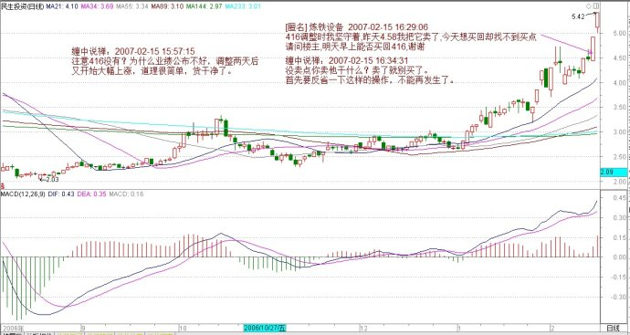
缠中说禅 2007-02-15 16:37:37
[匿名] 白玉兰 2007-02-15 16:34:11
缠中说禅 2007-02-15 16:26:57
[匿名] 白玉兰 2007-02-15 16:23:58
妹妹咋不回答我的问题？
山东人是老8股中表现最差的，是同样的程序选出来，可是就是不一样，这是是先退出还是什么？
==
这股票，里面人还是多，不干净，但已经比以前好多了，现在只能慢慢推着上，一急拉，别人不都出来了，走得慢有时候并不一定是坏事，特别开始的时候。你看777，原来也很麻烦，打跌停的都有，但后来不也走出来了。如果没耐心就先出来吧，按技术去找别的股票，一样的。
+++++++++++++++++++++++++
我有耐心的，我只是打探一下，这里又很多人拿了山东人，他们怕你生气已经不敢问了。。
777我赚了，就是跌停前一天卖的，然后补的999，特别感谢你
==
600777一直在创新高，你不能要求每一只股票都是连续涨停上去的，每只股票的盘面不同，当然走势就不一样了。而且这股票5元下本来就是强阻力，5元下走得慢点，很正常。
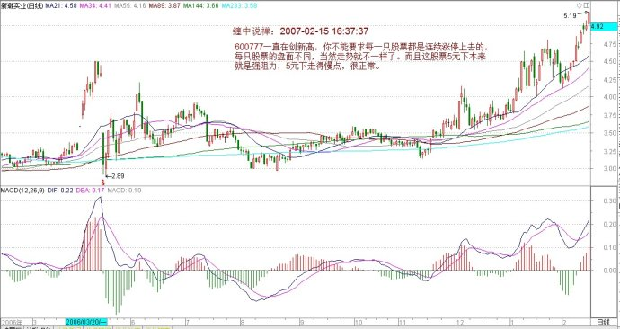
缠中说禅 2007-02-15 16:41:46
[匿名] 兰兰 2007-02-15 16:34:46
缠姐:
刚才您回答小鸟关于大盘中枢问题,我认为是从1048到1337才有三段,1048到1329好像没有三段? 请指点,谢谢!
==
第三段是1114到1129，前三段的级别一定是一样的，按你那种分法，就不一样了。其实后面都是中枢的延伸。
缠中说禅 2007-02-15 16:44:42
各位注意，这才是正确的
[匿名] 小鸟 2007-02-15 15:45:26
不好意思，再问一个关于找中枢有个问题：
妹妹说要看图上有明显的高低点，举个例子：今天大盘1分钟图上，从11：10到14：08这一段中间，应该怎么看高低点呢？
是11：10上升到11：15下跌到13：00，再上升到13：26下跌到13：36上升到14：08；
还是11：10上升到13：26下跌到13：36，再上升到14：08？
==
1048到1129，一个明显的上升中调整形成的中枢，三段很明显的，后面是该中枢的延伸。1413是第三类买点，确认中枢的完结。
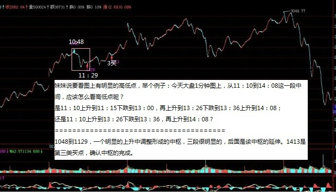
缠中说禅 2007-02-15 16:48:00
[匿名] 小鸟 2007-02-15 16:43:10
[匿名] 兰兰 2007-02-15 16:34:46
缠姐:
刚才您回答小鸟关于大盘中枢问题,我认为是从1048到1337才有三段,1048到1329好像没有三段? 请指点,谢谢! 我结合MACD也是这样判断的，但妹妹的意思应该是11：16和13：00也分别是高低点了
妹妹，对吗？
==
上面把1129写成1329了。纠正了。
缠中说禅 2007-02-15 16:46:35
[匿名] 中间体 2007-02-15 16:42:18 2007-02-15 16:20:40
[匿名] 新学生 2007-02-15 16:09:10
缠老师好，先预祝老师新春快乐
再我想问个问题，很明显的中枢能看出来，但像600193的日线我感觉没有中枢，不知道对不对？
－
老师能回答一下吗？
==
怎么会没有？1221到0118就很明显
-------------------------------
请问缠姐, 1221-0118 也应该是周线的中枢啊.
==
周线的，要每一段都有日线中枢，这不符合要求。
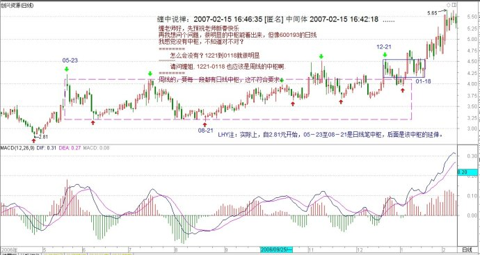
缠中说禅 2007-02-15 16:53:33
[匿名] 大盘 2007-02-15 16:01:01
请问博主，第3类买点有一种是盘整背离后不跌破中枢高点形成的，是不是还有不是盘整背离形成的第3类买点？，例如趋势中形成第2个中枢的第1段次级别下行走势。
还有，对于不断形成新的中枢，例如上涨方向3个以上的中枢，对从第3个中枢开始的每个新生中枢次级别的第1段下行走势为什么不可以称为第3类买点，每个新生中枢次级别的第3段下行走势又算是什么买点呢？
另外，盘整背离与趋势背离的区别我还不是十分清楚，是不是趋势背离是至少形成2个中枢后的上行段发生的背离吗（与第1个同级别中枢后的次级别上行段进行比较），而盘整背离是离开第1个中枢后的上行段发生的背离吗（与与第1个同级别中枢前的次级别上行段进行比较）？
恳请解惑！谢谢
==
也有可能，例如一个很强劲的上涨，然后一个快速的回调，然后继续上升。第三类买点关键是次级别上去，次级别回调不回中枢里。
盘整背驰一般都是中枢震荡时发生的，而趋势背驰，是a+A+b+B+c中，cb间的比较。
缠中说禅 2007-02-15 16:56:04
[匿名] 楚狂人 2007-02-15 16:54:03
请问缠主炒期货外汇什么的也是完全套用这理论嘛？
==
前面那课不是说了两个前提条件，你觉得他们不符合吗？
缠中说禅 2007-02-15 16:59:07
[匿名] 巴索林 2007-02-15 16:53:29
缠主新年愉快！
请教600316，5分钟线一点点不断盘整向上，真不好弄短差，又担心会大跌一下，不知怎样操作，请缠主指教。。。
==
这走得很标准，中枢不断新生，就一个个看上去，如果暂时不会看，就看5分钟的120线，不破，不会有大调整的。
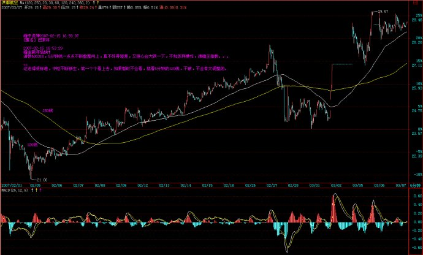
缠中说禅 2007-02-15
17:03:12
[匿名] 炼铁设备 2007-02-15 16:48:59
[匿名] 白玉兰
我有耐心的，我只是打探一下，这里又很多人拿了山东人，他们怕你生气已经不敢问了。。777我赚了，就是跌停前一天卖的，然后补的999，特别感谢你
======================
祝贺你。777感觉明天有危险，药因当初追高，随后发生调整，我亏惨了
==
中线没问题的。
缠中说禅 2007-02-15 17:06:00
[匿名] 小鸟 2007-02-15 17:02:29
请问10：11到10：33算一个中枢吗？
==
当然，然后是一个背驰，引发后面的下跌。
缠中说禅 2007-02-15 17:07:20
要先下了，再见。
缠中说禅 2007-02-15 17:08:46
[匿名] 越看越迷糊 2007-02-15 17:06:10
缠mm好！
看到最后反而有个最基础的问题迷糊了。还是关于走势中枢的，缠mm说过，上升趋势的走势中枢由下上下三段重叠得到，假如“上”这段较长，两个“下”段都很短，以致于三段没有交叉，如何求得中枢？如果在上升趋势中取上下上三段，则不存在这个问题？
==
临走回答你，那就不形成中枢，谁告诉你下上下一定形成中枢的？没重叠哪里有中枢？
下了，再见。
CCTV： 2007-02-15 17:25:15
[匿名] 越看越迷糊2007-02-15 17:20:30
缠中说禅 2007-02-15 17:08:46
[匿名] 越看越迷糊 2007-02-15 17:06:10
缠mm好！
看到最后反而有个最基础的问题迷糊了。还是关于走势中枢的，缠mm说过，上升趋势的走势中枢由下上下三段重叠得到，假如“上”这段较长，两个“下”段都很短，以致于三段没有交叉，如何求得中枢？如果在上升趋势中取上下上三段，则不存在这个问题？
==
临走回答你，那就不形成中枢，谁告诉你下上下一定形成中枢的？没重叠哪里有中枢？
下了，再见。
**********
关键是这种走势很可能发生，即在一个上升趋势中，每一次回调都距离上一次的高点很远，从而形成强势上涨，而不形成走势中枢。那么又该怎样理解这句话---缠中说禅趋势：在任何级别的任何走势中，某完成的走势类型至少包含两个以上依次同向的缠中说禅走势中枢，就称为该级别的缠中说禅趋势。
==
当然是后面才会形成中枢，妹妹说过，在日线上，如果不形成日线中枢，证明走势强劲，要到更高的位置才形成中枢。没有形成中枢，证明走势没有完结，这很好理解。
CCTV： 2007-02-15 21:49:49
星星 2007-02-15 21:27:03
缠中说禅 2007-02-15 17:06:00
[匿名] 小鸟 2007-02-15 17:02:29
请问10：11到10：33算一个中枢吗？
==
当然，然后是一个背驰，引发后面的下跌。
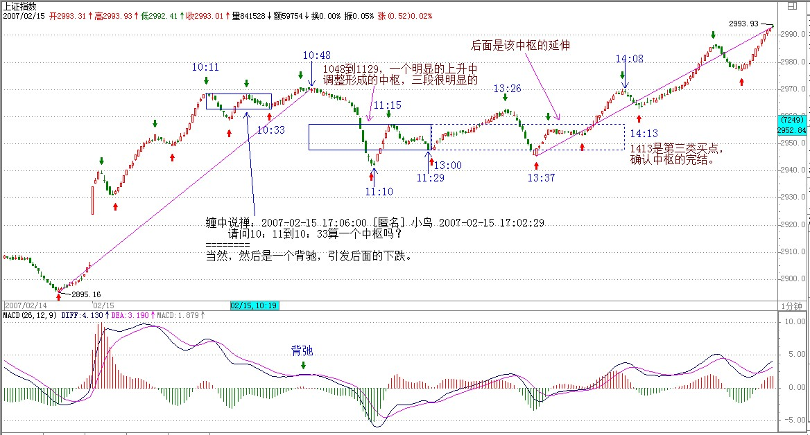
|